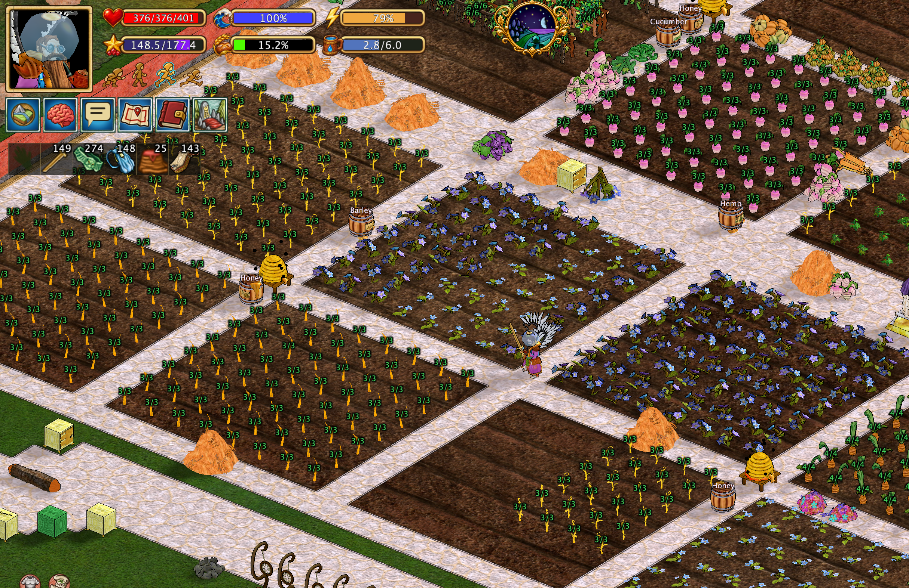

Automation scripts and everyday helpers¶
Hearthborn includes small, task-specific helpers in its action menus. They automate repetitive interactions with nearby objects, inventory items, animals, and crops. These are individual commands, not a system that independently runs an entire production chain.
The Xtensions menu also contains actions related to travel, mining, and deploying travel equipment. The specific commands documented below focus on production, farming, animals, and everyday interactions.

Crop growth stages¶
Hearthborn can display the growth stage of crops in fields directly above the plants.
By default, growth indicators are shown only for crops that are ready to harvest, keeping the field view less cluttered. Hold Shift to temporarily reveal the growth stages of crops that have not yet matured as well.

Before you start¶
- Make sure the required items, tools, and nearby objects are available as described for each command.
- Escape stops the script from taking further steps. It does not undo actions already completed or reverse changes sent to the game.
- A command cannot create missing resources or bypass game requirements. Its scope is limited to the actions described below.
Fuel and firing¶
Add five logs¶
Adds five logs to a supported nearby target. Have the required logs available before starting. This is a fuel-loading action, not an ignition command; it does not light the fire.
Add four branches to an oven¶
Places four branches into the nearest oven. Branches are taken only from the main inventory; the command does not search other containers or storage.
It does not light the oven. Press Escape to stop any remaining steps; branches already added stay added.
Add nine coal to a smelter¶
Loads nine pieces of coal into a smelter, using coal from the main inventory. This command targets smelters, not smokehouses.
It does not ignite the smelter or obtain coal from other storage. Escape stops further steps, not fuel already inserted.
Add twelve coal to a smelter¶
Loads twelve pieces of coal into a smelter, using coal from the main inventory. Smokehouses are not included.
Like the nine-coal command, it does not ignite the smelter. Escape only cancels subsequent actions.
Fuel commands do not start fires. Use the separate torch-lighting command when appropriate.
Production stations¶
Collect finished items from drying frames¶
Collects finished contents from drying frames in the already loaded surrounding area.
Shift + the same action instead hangs raw hides on drying frames. It does not search unloaded areas or guarantee that every frame is ready or usable. Escape stops the remaining operations without returning collected items or removing hides already hung.
Collect finished leather¶
Collects finished leather from tanning tubs.
Shift + the same action instead loads dried hides into the tubs. It does not dry hides or complete tanning instantly. Escape prevents further steps but does not undo completed transfers.
Fill cheese trays¶
Fills open, empty cheese trays using curd. The command requires at least four pieces of the same curd.
If a different kind of curd appears on the cursor, the script stops. It does not mix curd types, open closed trays automatically, or create missing curd. Escape stops further filling without undoing trays already filled.
Light with a torch¶
Takes a lit torch from the character's hand, uses it to light the nearest supported target, then returns the torch to its original place.
Supported targets include a nearby oven, smelter, crucible, kiln, or cauldron. The command does not create or ignite an unlit torch, add fuel, or start unrelated production steps. Escape cancels further steps but cannot undo a fire already lit.
Butcher fish¶
Processes fish in the inventory until no fish remain to process.
It does not obtain additional fish from the world or storage. Escape stops subsequent processing; fish already processed stay processed.
Animals and trellis crops¶
Harvest the nearest trellis plant¶
Harvests the nearest ripe trellis plant. It does not harvest unripe plants or automatically process the harvest.
Escape stops further actions but does not undo a completed harvest.
Destroy the nearest trellis plant¶
Removes the nearest trellis plant rather than harvesting it. This is a separate action from harvesting ripe crops.
It does not restore destroyed plants. Escape only prevents additional steps.
Shoo the nearest animal¶
Shoos the nearest stationary supported animal: horse, sheep, cow, pig, or goat.
It does not target moving animals or other species. Escape stops any remaining actions; an animal already shooed will not be recalled.
Clover¶
Feeds clover to a stationary, tameable animal. The command does not tame arbitrary animals automatically or pursue a moving target.
Escape stops further actions but does not reverse feeding already performed.
Rope¶
Takes a rope from the inventory and leaves it on the cursor for the player to use.
It does not automatically attach the rope to an animal or return it to inventory. Escape stops further script steps; it does not necessarily clear the item already on the cursor.
Call and mount a horse¶
Calls and mounts a horse. If the horse is far away, the command whistles first.
The command does not start if the character is already mounted or is in a boat. It does not guarantee that an unavailable horse will arrive. Escape stops any remaining steps, not a whistle or mounting action already performed.
Dismount a rider¶
Uses the nearest stationary horse for the dismount-rider action.
It does not seek out moving horses or distant targets. Escape cancels subsequent steps but cannot reverse a completed action.
Additional everyday helpers¶
Collect milk and report quality¶
Collects milk and reports the quality of the milk obtained. The reported value reflects the collection performed by the helper; it is not a prediction of future milk quality.
Collect dreams¶
Collects dreams from nearby dreamcatchers. It operates on dreamcatchers accessible to the client in the surrounding area, not on objects elsewhere in the world.
Limitations and cancellation¶
Each helper above has its own inventory, target, and state requirements. In particular, the fuel commands use the specified inventory source and do not light fires; drying frames and tanning tubs have separate collect/load modes using Shift; and cheese trays require matching curd and open empty trays. See the corresponding sections for exact behavior.
These helpers operate on available, observed game objects and do not guarantee success if a target moves, an inventory changes, or game conditions prevent an interaction.
Escape stops future steps only. It is not an undo command for items transferred, fuel inserted, crops harvested, fires lit, or other actions already completed.
The quest journal, livestock records, combat schools, and damage reset are separate interfaces or features, not scripts covered on this page.